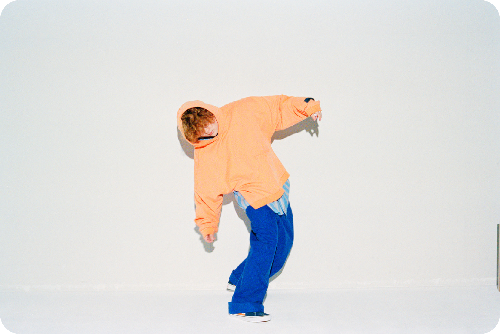

BIOGRAPHY

Vaundy (바운디) 현역 대학생 22살.
작사, 작곡, 편곡 등 자신이 직접 진행하며 디자인과 영상도 셀프 프로듀스하는 멀티 아티스트.
2019년 가을부터 YouTube를 통해 활동을 시작.
「東京フラッシュ」, 「不可幸力」등 다양한 장르 곡 발표 SNS에서 순식간에 큰 화제가 되었다.
현재 YouTube, Subscription 재생수가 20억 회를 넘어 Subscription 시대에 상징적인 존재로 주목받고 있다.
이제까지 개최한 콘서트 모두 매진.
국내외 아티스트들에게 큰 주목을 받고 있으며 적극적으로 콜라보레이션도 진행하고 있다.
LAUV에서 오파를 받아 글로벌리믹스 앨범에도 참여.
글로벌 팀 제작 「不可幸力(Global Dance Video)」가 세계적인 컬쳐사이트 Nowness에서 픽업되는 등 국내 외에서 적극적으로 활동하고 있다.
사람들이 귀를 잡아 순식간에 빠지는 전성의 목소리 파격적인 재능을 느끼지 않을 수 없는
폭넓은 악곡 센스는 젊은 층을 중심으로 팬덤을 가속적으로 확대 중이다.
DISCOGRAPHY
발매 전부터 MV 조회수 150만회 돌파하며 대히트
@user-**6pu7jc9r
最初から最後まで凄い良い曲だけれど、特にサビが好きすぎる
처음부터 끝까지 굉장히 좋은 곡이지만 특히 후렴구를 너무 좋아해.
일본의 인기 모델 겸 배우
고마츠 나나가 작품의 뮤즈로 참여
@user-**1ry7xm8n
このレトロ感がたまりません！！今でもほぼ毎日聴いてしまう！
이 레트로한 느낌을 참을 수 없어요!! 지금도 거의 매일 듣습니다!
TV 도쿄 드라마 '버리세요 아다치씨' 오프닝 테마곡
드라마의 내용 '안심하고 버려도 된다'를 주제로 작업
@user-**5ds7mt7v
本当にこの人曲の幅が広いな…
정말 이 사람 곡의 폭이 넓구나...